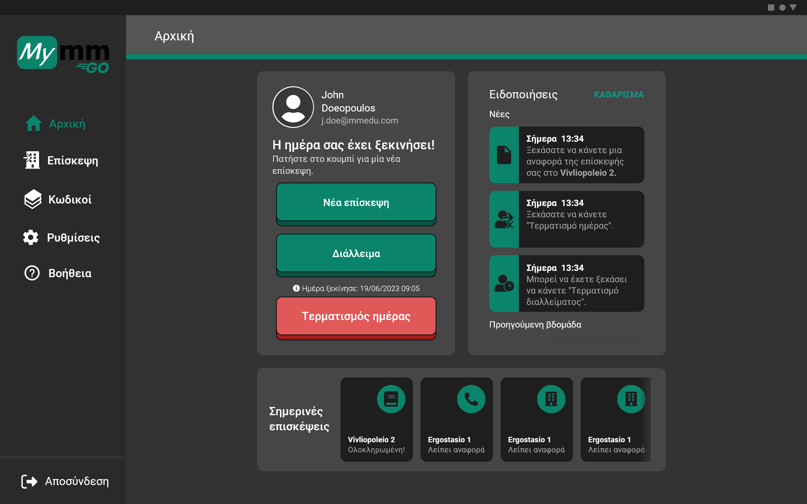
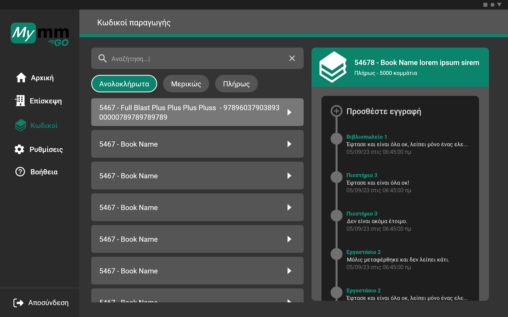
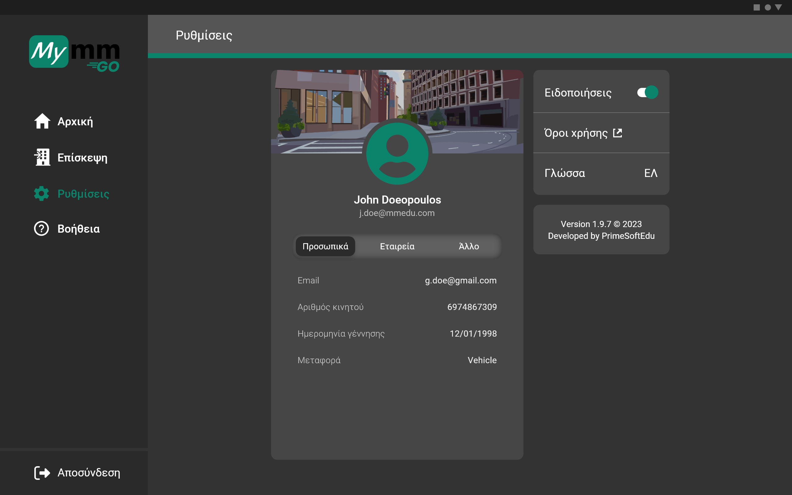

Application
Overview
This was my first mobile application that was going to be implemented
with the flutter framework, so I sticked with Material Design 3 design system. MymmGO is an app that
is used by salesmen, remote workers, drivers, production managers and generally people that need
to record their work, tasks, worktime etc. from their tablet devices.
Problem statement
In the company we have an ERP system to organize everything, but it was only accessible from desktop
devices. So, quickly a need for mobile version of it occurred by the people that don’t always work 9-5
or they don’t have a base and they are always on the move. Extra requirements came along with that because
the desktop ERP system didn’t fulfill their needs.
Research and Discovery
When this project was presented to me, I had a difficult time understanding it because I had to learn the
whole workflow of these people, their special needs and pain points. But no one is more suitable to explain their
work than the workers themselves, so I insisted to have a meeting with one of them to save time from speculations.
We sat down and discussed their typical day at work and generally how could this app save them time and effort in
simple things. That helped a lot and it was time to dive in the design process.

Design
For the look and feel of this app I adapted our prior ERP system’s color palette, typography and icons in
order to make the transition easier through familiarity. I used as much negative space as I could to make the
responsiveness easier because everyone use their personal tablets rather than the companie’s. I also used color
semantics for different stages of the production to help separate them and understand them with a quick look.

Challenges
First and foremost was checking in and out to record their work time, so it all begins after they check in. I
included the concept of notifications because many warnings (system messages, human errors, reminders etc.) needed to be acknowledged
in time to be resolved. Furthermore, a history of their daily tasks was helpful because they can iterate them at the end of the day in hectic
weeks. Another critical point is that many production managers pick up their coworkers’ unfinished tasks and progress them
or complete them entirely. Because of that, all the production process needed to be recorded with a certain timeline so each
manager could interfere and help progress the tasks. A help corner was also necessary because every new user that was not familiar
with all this workflow needed a little nudge.

Reflection
This project was a huge learning step for me because it was the first time that I used a design system, sat down
and talked with the user and tried to understand their needs and pain points and lastly fragmented a complex process to make
it easy and straight forward.
For much more depth and details, contact me.